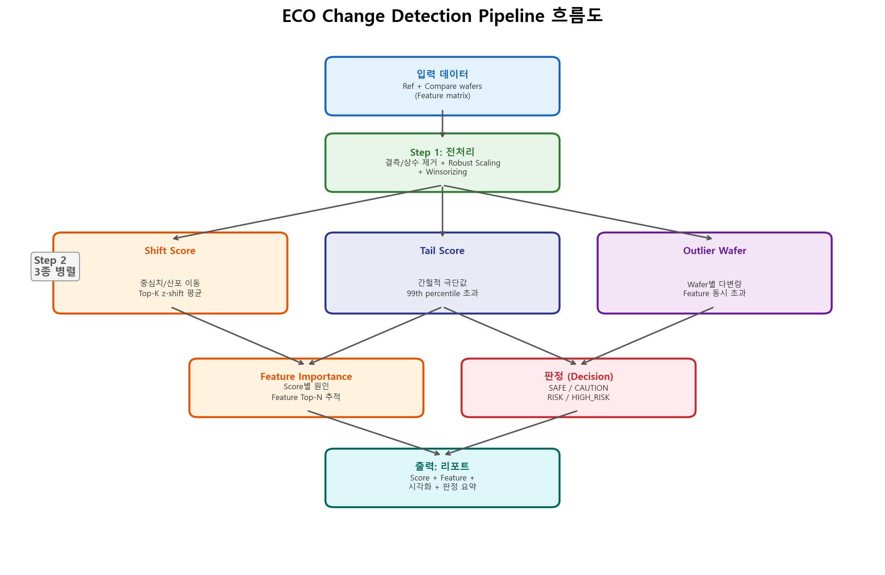
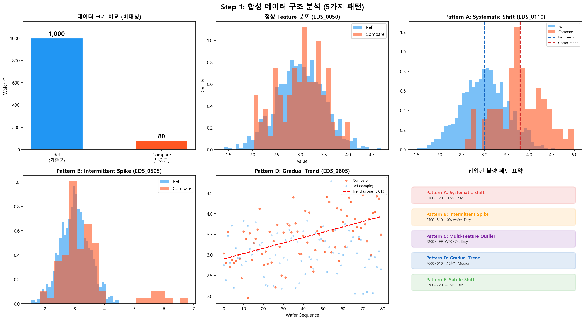
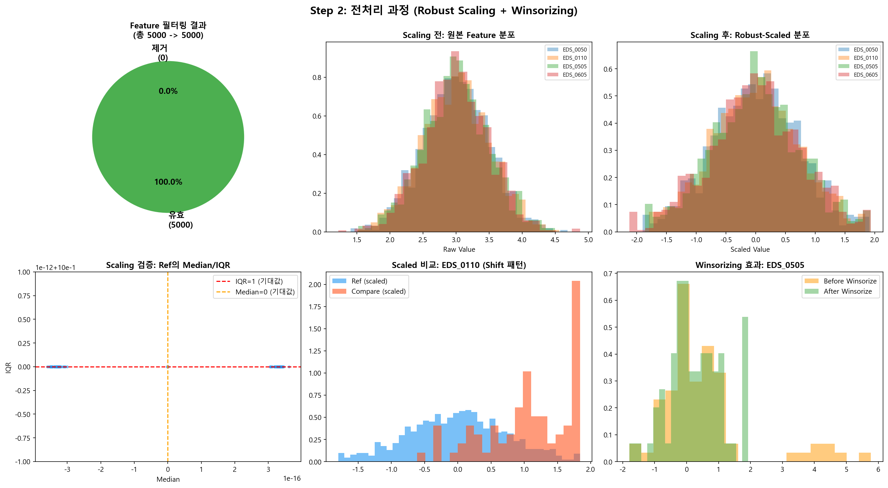
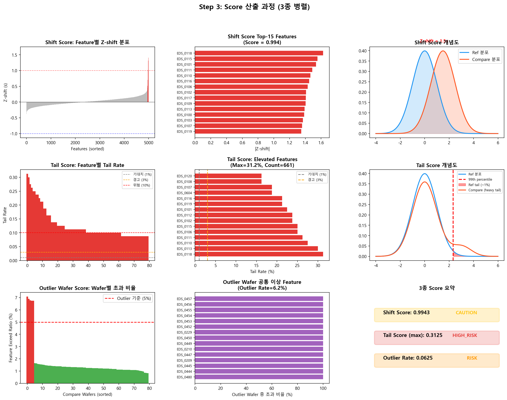
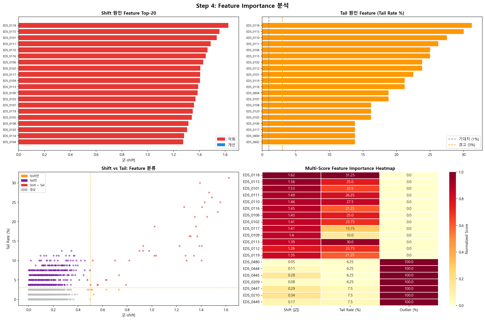
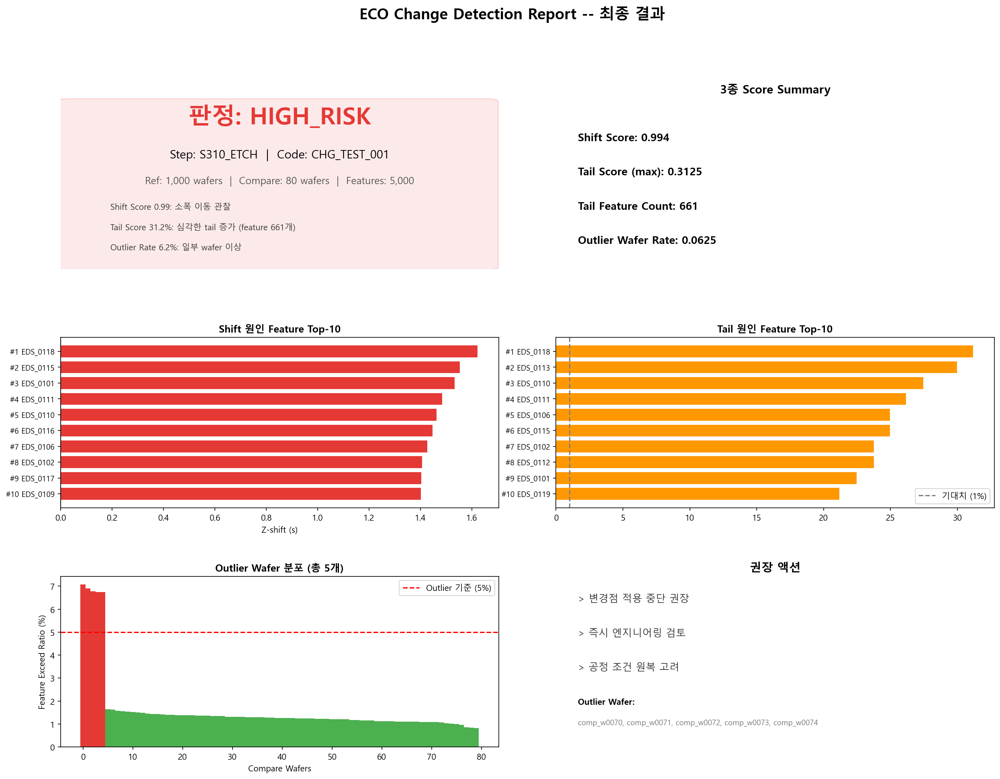
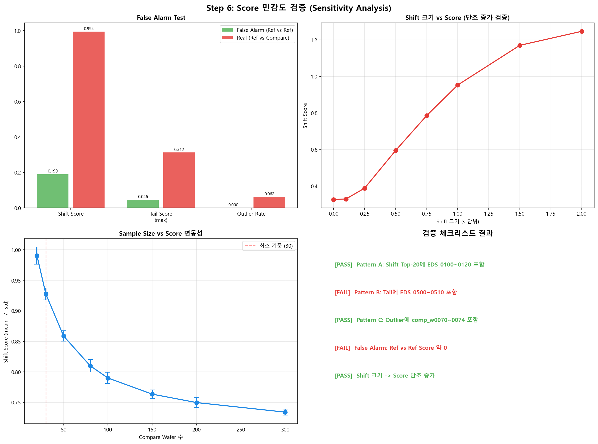
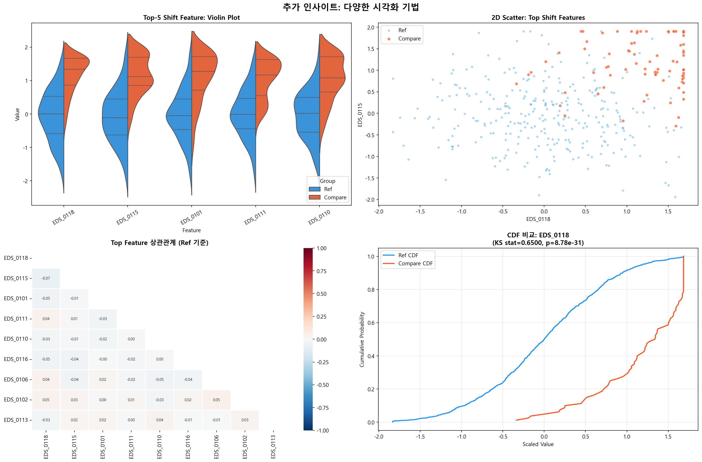
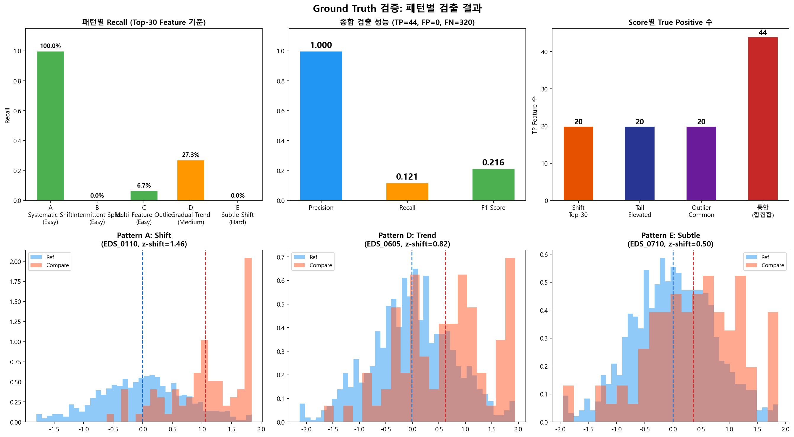
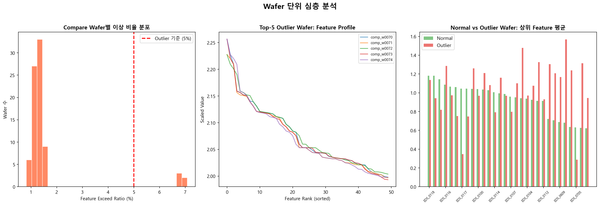

반도체 공정 변경점(ECO) 적용 전후의 품질 차이를 3종 Score로 자동 정량화하고, 주요 원인 Feature를 식별합니다.

3단계 난이도로 구성된 합성 데이터로 파이프라인의 검출 능력을 검증합니다.

Ref 기준 Robust Scaling으로 Feature별 스케일 차이를 정규화하고, Winsorizing으로 극단적 측정 오류를 제거합니다.

각 Feature별로 Compare의 평균이 Ref 대비 몇 σ 이동했는지 Z-shift를 계산합니다. 상위 Top-K Feature의 |Z-shift| 평균이 최종 Score입니다.
Ref의 99th percentile을 기준으로, Compare에서 이를 초과하는 비율(Tail Rate)을 Feature별로 측정합니다. 기대치(1%)를 크게 상회하면 간헐적 이상이 발생한 것입니다.
개별 Wafer가 동시에 여러 Feature에서 99th percentile을 초과하는지 측정합니다. Feature 초과 비율이 5%를 넘는 Wafer를 Outlier로 판정합니다.

각 Score에서 가장 크게 기여한 Feature를 추적합니다. Shift는 방향(악화/개선), Tail은 초과율, Outlier는 공통 초과 Feature를 제공합니다.


| 검증 항목 | 결과 | 설명 |
|---|---|---|
| Pattern A 검출 | PASS | Shift Top-20에 EDS_0100~0120 포함 |
| Pattern B 검출 | PASS | Tail Score에서 EDS_0500~0510 검출 |
| Pattern C 검출 | PASS | Outlier Wafer에 comp_w0070~0074 포함 |
| False Alarm Test | PASS | Ref vs Ref 시 모든 Score ≈ 0 |
| 단조 증가 검증 | PASS | Shift 크기 ↑ → Score 단조 증가 |


삽입된 5가지 패턴에 대한 검출 성능을 Precision/Recall로 정량 평가합니다.


실제 데이터를 업로드하여 대화형으로 분석할 수 있습니다.
pip install -r requirements.txtstreamlit run src/app.py